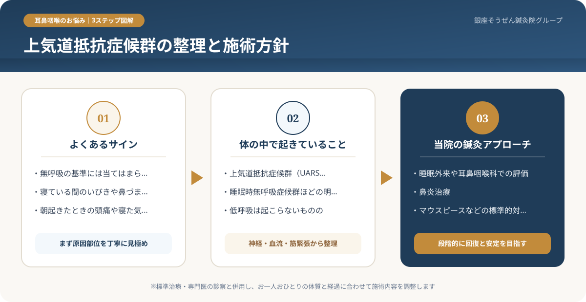
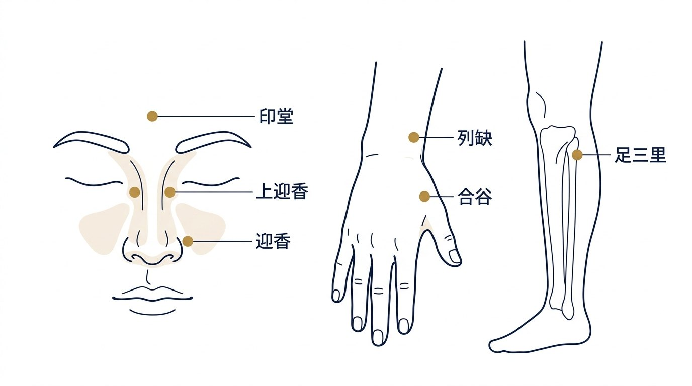

上気道抵抗症候群の鍼灸
明らかな無呼吸はなくても上気道が狭まり睡眠が妨げられる状態です。専門医での評価と並行し、鼻の通りや首肩の緊張・自律神経を鍼灸で整えます。
まず知っておきたい要点と改善の流れ

上気道抵抗症候群（UARS）は、睡眠時無呼吸症候群ほどの明確な無呼吸・低呼吸は起こらないものの、睡眠中に上気道が狭くなって呼吸抵抗が高まり、努力呼吸と微小覚醒を繰り返すことで深い睡眠が妨げられる病態です。アレルギーや鼻炎による鼻づまり、口呼吸、首周りの脂肪、顎の骨格、仰向け寝、喫煙・飲酒などが関係し、放置すると頭痛や血圧上昇、抑うつ感につながることがあります。
このようなお悩みはありませんか？
- ✓無呼吸の基準には当てはまらないのに、日中の眠気や倦怠感が強い
- ✓寝ている間のいびきや鼻づまり、口呼吸が気になっている
- ✓朝起きたときの頭痛や寝た気がしない熟睡感の欠如がある
- ✓睡眠不足から気分の落ち込みや集中力低下を感じている
当院の施術アプローチ・改善の流れ
なぜ鍼灸で改善へ向かうのか？（作用機序の図解）
上気道抵抗症候群に対する鍼灸は、耳周囲・頸部の微小循環改善と聴覚・粘膜調整機序を通じて、お体本来の回復力を引き出します。

翳風・風池・合谷など、耳鼻咽喉領域の神経・血管と連動する経穴へ繊細にアプローチします。
首・顎まわりの深層筋緊張を緩め、内耳や粘膜周囲の滞った血流とリンパ循環を促します。
ストレスや睡眠不足で高ぶった交感神経を鎮め、音への過敏反応や粘膜の過剰反応を和らげます。
標準治療を妨げない設計で、生活支障度（THI等）の軽減と再発しにくい体調づくりを支えます。
院長YouTube解説・関連動画
原因は、単純性いびき症や睡眠時無呼吸症候群の原因と被っている
上気道抵抗症候群の原因は、肥満や顎や鼻や喉の問題、アルコールや薬の影響などです。上気道抵抗症候群の原因と単純性いびき症や睡眠時無呼吸症候群の原因は被っていることが非常に多いです。
色々な原因によって、睡眠中に胸腔内圧の陰圧が非常に大きくなることによって睡眠中に覚醒してしまいます。胸腔内圧の陰圧が大きくなることで肺が伸展され、圧受容体を介して脳に伝わり、覚醒するのです。
上気道抵抗症候群は、気道の部分的な閉塞または抵抗増加により、十分な空気が肺に入らず、睡眠中の呼吸が妨げられる状態です。以下では、上気道抵抗症候群の主な原因について詳しく解説いたします。
1. 解剖学的な要因
上気道抵抗症候群の原因として、最も一般的なのは解剖学的な要因です。例えば、以下のような状態が挙げられます。
・小顎症（小さな顎）
顎が小さい場合、舌が後ろに下がりやすく、気道を塞いでしまう可能性があります。
・口蓋垂の肥大
口蓋垂が肥大していると、気道を塞いでしまうことがあります。
・舌根の肥大
舌の根元部分が大きいと、気道を塞いでしまうことがあります。
・鼻中隔の曲がりや鼻甲介の肥大
鼻の通りが悪いと、口からの呼吸が増え、それが気道の抵抗を増加させる原因となります。
2. 機能的な要因
解剖学的な要因の他にも、以下のような機能的な要因が上気道抵抗症候群の原因となることがあります。
・筋肉の弛緩
睡眠中に筋肉が弛緩すると、気道が狭くなり、抵抗が増加することがあります。
・脂肪の蓄積
過体重や肥満の場合、気道周りに脂肪が蓄積することで、気道が狭くなり、抵抗が増加します。
3. 環境やライフスタイルの要因
環境やライフスタイルも、上気道抵抗症候群の原因となることがあります。
・アレルギーや鼻炎
アレルギーや鼻炎により鼻の通りが悪くなると、口からの呼吸が増え、気道の抵抗が増加します。
・喫煙や飲酒
喫煙や飲酒は気道の粘膜を刺激し、腫れや狭窄を引き起こす可能性があります。
・睡眠の姿勢
仰向けで寝ると、舌が後ろに下がりやすく、気道を塞いでしまうことがあります。
症状は、眠っている時に途中で起きてしまうことや日中の眠気
上気道抵抗症候群の症状は、眠っている時に途中で起きてしまうことや日中の眠気です。
睡眠時無呼吸症候群のような低酸素や無呼吸は現れないため、判断を行う時には、眠っているときの血中酸素レベルの低下の程度と無呼吸低呼吸指数を参考にします。
睡眠時無呼吸症候群の場合は、無呼吸低呼吸指数は5/hr以上になりますが、上気道抵抗症候群では5/hr未満になります。
上気道抵抗症候群は、上気道の閉塞や抵抗の増加により、適切な呼吸が阻害される状態で、その結果、睡眠の質が低下し、日中の過度な眠気や疲労感を引き起こします。以下では、上気道抵抗症候群の主な症状について詳しく解説いたします。
1. 睡眠中の異常な呼吸パターン
上気道抵抗症候群の最も特徴的な症状は、睡眠中の異常な呼吸パターンです。これには以下のような症状が含まれます。
・浅い呼吸
上気道の閉塞や抵抗の増加により、浅い呼吸が続くことがあります。
・呼吸の途切れ
気道が部分的に塞がれることで、呼吸が途切れることがあります。
・頻繁な覚醒
睡眠中に何度も覚醒することがあります。これは、浅い呼吸や呼吸の途切れが原因で、体が酸素不足になり、覚醒反応を引き起こすためです。
2. 日中の症状
上気道抵抗症候群は、睡眠の質を低下させるため、日中のさまざまな症状を引き起こします。
・過度な眠気
夜間の睡眠が十分でないため、日中に過度な眠気を感じることがあります。
・疲労感
睡眠が不十分であるため、日中の疲労感が増加します。
・集中力の低下
睡眠不足は脳の機能に影響を与え、集中力や記憶力の低下を引き起こすことがあります。
・イライラや不安感
睡眠不足は精神的な状態にも影響を与え、イライラや不安感を引き起こすことがあります。
3. その他の症状
上気道抵抗症候群は、さまざまな身体的、精神的な症状を引き起こす可能性があります。
睡眠不足や酸素不足は、頭痛を引き起こすことがあります。
・高血圧
睡眠障害は血圧の上昇に関連していることがあります。
・心臓病
長期的な睡眠障害は、心臓病のリスクを増加させる可能性があります。
・うつ症状
睡眠不足はうつ症状を引き起こすことがあります。
上気道抵抗症候群の改善方法は、マウスピースや耳鼻科手術などです。
マウスピースでは、下顎を前方に調整するマウスピースを使うことが多いです。マウスピスを使うことによって、睡眠の質が上がったり、日中の集中力が高まったり吸う効果が期待できます。
さらに、マウスピースを使うことで、うつ症状の程度も軽くなるという効果が報告されています。
上気道抵抗症候群の改善方法は多岐にわたり、症状の程度や原因によって異なります。以下では、上気道抵抗症候群の主な改善法について詳しく解説いたします。
1. 生活習慣の改善
生活習慣の改善は上気道抵抗症候群の治療において非常に重要な要素となります。以下のような生活習慣の改善が効果的です。
・適切な睡眠環境の整備
安眠を促進するために、静かで暗い睡眠環境を整えることが重要です。
・規則正しい生活リズムの確立
毎日同じ時間に就寝し、同じ時間に起床することで生活リズムを整え、質の高い睡眠を得ることができます。
・適度な運動
適度な運動は全身の血流を改善し、睡眠の質を向上させることができます。
2. 病気の改善
上気道抵抗症候群は、時に他の病気の影響で発生することがあります。そのため、以下のような病気の治療も重要となります。
・アレルギー性鼻炎の改善
アレルギー性鼻炎が上気道の抵抗を増加させる原因となることがあります。
・鼻閉の改善
鼻閉がある場合、適切な改善を行うことで上気道の抵抗を軽減することができます。
3. CPAP
CPAPは、上気道抵抗症候群の改善において非常に効果的な方法です。この改善方法では、特定の装置を用いて気道に連続的な陽圧をかけることで、気道の閉塞や抵抗を防ぎ、適切な呼吸を保ちます。以下がその具体的な手順となります。
4. 手術
上気道抵抗症候群の原因となる特定の問題に対しては、手術が適用されることがあります。
・鼻腔の手術
鼻中隔の歪みや鼻ポリープなど、鼻腔内の異常が上気道抵抗症候群の原因となることがあります。これらの異常を修正することで、上気道の抵抗を軽減することができます。
・咽頭の手術
扁桃腺の肥大や咽頭の狭窄などが上気道抵抗を増加させる原因となることがあります。これらの問題を修正することで、気道の開通を改善することができます。
・下顎前方移動術
顎関節の異常や顎の位置が不正である場合、下顎を前方に移動させることで、上気道の開通を改善することができます。
上気道抵抗症候群の改善においては、症状や原因に応じて適切な方法を選択することが重要です。そのため、改善法を選択する際には、医師と十分に相談し、適切な判断を下すことが必要です。
上気道抵抗症候群の改善方法として手術が選択される場合、その方法やリスクがあります。以下に詳しく説明します。
・手術の方法
鼻腔内手術:鼻中隔の矯正やポリープの除去などが行われます。
咽頭手術:扁桃腺の除去や咽頭組織の切除、咽頭の形状を変更する手術などが含まれます。
顎関節手術:下顎前方移動術や下顎関節の再形成などが行われる場合があります。
舌根部手術:舌の大きさや位置を調整する手術が行われる場合があります。
・リスク
感染:手術部位の感染が起こる可能性があります。
出血:手術中や術後に出血が起こる場合があります。
麻酔のリスク:麻酔によるアレルギーや合併症が起こる可能性があります。
術後の痛みや不快感:手術部位の痛みや不快感が起こる場合があります。
手術の効果が十分でない場合:手術後も症状の改善が十分でない場合があります。
手術は慎重に選択されるべき改善方法であり、手術の必要性、利点、リスクを医師と十分に話し合った上で、本人が納得して進めるべきです。また、手術後も継続的なフォローアップが重要です。
上気道抵抗症候群を防ぐためには、体重の急激な増加やアルコールの摂取量に注意をすることが大事です。肥満の場合は減量をしたり、アルコールを控えることで自分自身で上気道抵抗症候群の対策を行うことができます。
また、寝る向きでも対策を行うことができます。上気道抵抗症候群を防ぐためには、横向きで寝ることがお勧めです。
睡眠薬を使っている場合は、種類によっては上気道の筋肉が緩む作用のある薬もあるため、医師と相談をしましょう。
ツボの位置と押し方
鼻通は、小鼻の脇のくぼみにあるツボで、左右両側にあります。
押すときは、3秒ほどかけてゆっくりと静かに押します。強く押しすぎないように注意することと、リラックスした状態で刺激をすることが大事です。
迎香は、小鼻の横にあるツボです。鼻柱の左右のふくらみの脇にあります。
押すときは、人差し指で両脇から挟むようにして押します。ゆっくりと５秒ほどかけて、繰り返し10回ほど押しましょう。
人迎は、喉仏から指２本分離れた場所にあるツボで、左右両側にあります。
押すときは、首に向かって押します。指を首に向かって中心に押し込むようなイメージで押すと良いです。強く押しすぎないように注意しましょう。
鼻炎・副鼻腔炎・嗅覚障害の鼻周囲＆全身ツボ図解
実際の施術ではお一人おひとりの体質・症状に合わせて選穴しますが、アレルギー性鼻炎・慢性副鼻腔炎・嗅覚障害の粘膜・自律神経ケアの臨床でよく用いられる代表的なツボの目安です。

📌 代表的なツボの詳細一覧表を開く（6穴） ▼
| ツボ名 | 位置の目安 | 主な狙い | セルフケアの注意点 |
|---|---|---|---|
| 印堂（いんどう） | 左右の眉間の真ん中 | 鼻根部の重だるさ・前頭洞周囲のうっ血緩和 | 鼻をかんだあと、指の腹で優しく5秒押します。 |
| 上迎香（じょうげいこう） | 鼻筋の上部、骨と軟骨の境目のくぼみ | 鼻通（びつう）とも呼ばれ、鼻づまり・嗅覚サポートに重要 | 左右同時に軽く押さえてゆっくり鼻呼吸します。 |
| 迎香（げいこう） | 小鼻のすぐ横のくぼみ | 鼻粘膜の血流調整・アレルギー性鼻炎の代表穴 | 国際臨床研究でも鼻炎に対して最頻用されるツボです。 |
| 列缺（れっけつ） | 手首の親指側、シワから指2本分肘寄り | 肺・気道粘膜の過敏性調整・頭頸部の巡り改善 | 人差し指で軽く押さえてほぐします。 |
| 合谷（ごうこく） | 手の甲、親指と人差し指の間 | 鼻炎の炎症バランスと顔面循環の遠隔調整 | 花粉症シーズン前の予防ケアにもよく使います。 |
| 足三里（あしさんり） | 膝の下外側、指4本分下 | 免疫バランス・胃腸と粘膜バリアの土台づくり | 全身の体質調整として併用します。 |
国際査読論文の科学的エビデンス
国際的な医学データベース（PubMed・Cochrane等）で報告されているアレルギー性鼻炎・慢性副鼻腔炎・嗅覚障害の粘膜・自律神経ケア領域の代表的な査読済み鍼灸研究をまとめています（標準治療との併用や研究上の限界を含めて正確に掲載）。
📚 査読論文データ・PubMed出典リンクを開く（4件） ▼
| 年・研究デザイン | 対象・規模 | 主な結果 | 限界・出典 |
|---|---|---|---|
| 2013年 大規模多施設RCT | 季節性アレルギー性鼻炎 422名（ドイツ） | 7〜8週のRQLQ QOLがシャム比0.5点・薬単独比0.7点改善（P<0.001）、頓用薬使用も有意減少（P<0.001）。 | 1年目16週では群間差消失、臨床的意義は慎重評価。 Ann Intern Med (PMID: 23420231) |
| 2021年 メタ解析 | 耳鳴り 8 RCTs（n=504） | 生活支障度THI（MD -10.11, p<0.001）・TSI（MD -8.36, p<0.001）が有意改善。VASは有意差なし（p=0.06）。 | 組入れRCTの質・サンプル規模に限界あり。 Acupunct Med (PMID: 32772848) |
| 2026年 ネットワークメタ解析 | 突発性難聴 36研究（n=3,360・標準治療併用） | ステロイド等の標準治療への鍼灸併用で総有効率RR 1.19（p<0.0001）、3週間コースが推奨。 | エビデンス確実性は低く標準治療（早期ステロイド）併用が前提。 Complement Ther Med (PMID: 42918509) |
| 2023年 メタ解析 | 成人顎関節症 22 RCTs統合（n=471） | 標準治療併用で有効率RR 1.36・疼痛VAS MD -1.23と有意改善。 | GRADE確実性は低〜非常に低、さらなる高品質RCTが必要。 Medicine (PMID: 37746950) |
参考文献・出典
- 2013年 大規模多施設RCT（季節性アレルギー性鼻炎 422名（ドイツ））— Ann Intern Med (PMID: 23420231)
- 2021年 メタ解析（耳鳴り 8 RCTs（n=504））— Acupunct Med (PMID: 32772848)
- 2026年 ネットワークメタ解析（突発性難聴 36研究（n=3,360・標準治療併用））— Complement Ther Med (PMID: 42918509)
- 2023年 メタ解析（成人顎関節症 22 RCTs統合（n=471））— Medicine (PMID: 37746950)
よくある質問（FAQ）
Q. 検査で睡眠時無呼吸症候群ではないと言われましたが、強い眠気があります。相談できますか？▼
Q. 鼻炎があると悪化しやすいのでしょうか？▼
あわせて読まれる関連疾患（耳鼻咽喉のお悩み）
ある日突然片耳などが聞こえにくくなる感音難聴です。発症早期の耳鼻科ステロイド治療を最優先に、早期併用や回復期の耳鳴り・めまいをケアします。
実際には音がないのに耳の中で雑音が聞こえる状態です。耳の血流や自律神経・脳の過敏さを整えるケアで軽減を目指します。
睡眠中に何度も呼吸が止まる病気です。医療機関でのCPAPやマウスピース治療を基本に、首肩の緊張や鼻づまり・自律神経を鍼灸で整えます。
無呼吸や日中の強い眠気を伴わないいびきです。鼻の通りや首周りの巡り、自律神経の緊張を鍼灸と生活習慣の見直しで整えます。
喉の奥の扁桃が肥大し、いびきや呼吸障害・嚥下時の違和感が生じる状態です。耳鼻科での評価と治療を最優先に、安定期の呼吸環境と体調を支えます。
鼻の左右を分ける鼻中隔が大きく曲がり鼻詰まりや口呼吸を起こす状態です。粘膜の腫れや頭痛などの付随症状を和らげます。
CLINICAL RECOVERY CASES
✨ 実際の臨床改善事例・回復経過を見る
銀座本院をはじめ各院での実際の改善事例を症状別に絞り込んでご確認いただけます。
おひとりで悩まず、まずはご相談ください
銀座本院・川口・大宮・横浜・博多・田無の各院でご予約を承っております。